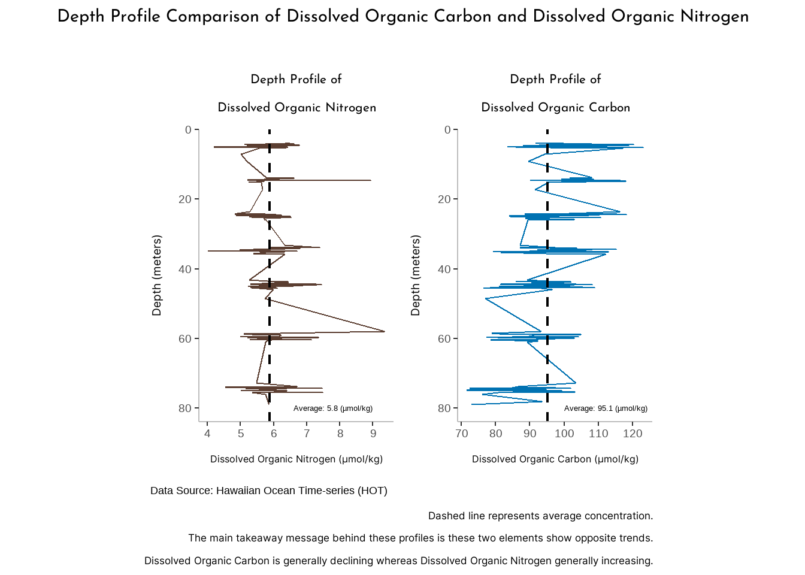

How I did it:
#| fig-alt: "Dual axis plot depicting the concentration of both dissolved Nitrogen and dissolved Carbon, as it shows that Nitrogen has two significant spikes in concentration near 20 meters below sea level and 60 meters below sea level, while also including two horizontal dotted lines showing the average concentration of both components throughout so that the reader is able to make comparisons. "
#........................first plot (technical report)................
ggplot(nutrient_clean_2, aes(x = depth)) +
# first line plot is of dissolved nitrogen
geom_line(aes(y = dissolved_n, color = "Nitrogen")) +
# adding a horizontal dotted line representing the average dissolved nitrogen value
geom_hline(yintercept = avg_dissolved_n,
color = "lightgray",
linetype = 'dotted') +
# adding a horizontal dotted line representing the average dissolved carbon value
geom_hline(
yintercept = avg_dissolved_c / coeff,
color = 'lightgray',
linetype = 'dotted'
) +
# second line plot is of dissolved carbon divided by the coefficient in order for it to show on the same plane as dissolved nitrogen
geom_line(aes(y = dissolved_c / coeff, color = "Carbon")) +
# specifying the two axes and labeling
scale_y_continuous(name = 'Dissolved Nitrogen (µmol/kg)',
sec.axis = sec_axis( ~ . * coeff,
name = 'Dissolved Carbon (µmol/kg)')) +
# using color blind friendly colors to distinguish the different lines
scale_color_manual(values = c('Nitrogen' = '#999933',
'Carbon' = '#117733')) +
# adding x axis label, title, and citation
labs(x = 'Depth (m)',
title = 'Depth Profile Comparison of Dissolved Carbon and Nitrogen',
tag = "Data Source: Hawaiian Ocean Time-series (HOT)") +
# reversing the x axis values so that the top is 0 and the bottom is 80
scale_x_reverse() +
# adjusting the x and y axis title fonts and sizes
# removing the legend title, panel border, panel grid major and minor lines
# specifying the tag position for the citation, specifying legend text
theme(
aspect.ratio = 2,
axis.title.x = element_text(family = 'inter', size = 14),
axis.title.y = element_text(family = 'inter', size = 14),
plot.title = element_text(
family = 'josefin',
size = 18,
hjust = .5
),
panel.border = element_blank(),
panel.grid.major = element_blank(),
panel.grid.minor = element_blank(),
panel.background = element_blank(),
axis.line = element_line(colour = "grey"),
axis.text.x = element_text(size = 14),
axis.text.y = element_text(size = 14),
legend.title = element_blank(),
legend.text = element_text(family = 'inter', size = 14),
plot.tag.position = c(0.9999, 0),
legend.key = element_blank()
) +
# adding annotations to specify average concentrations for the horizontal lines generated
annotate(
"text",
x = 60,
y = 4.5,
label = 'Average concentration: 5.8 (µmol/kg)',
angle = -90,
size = 4
) +
annotate(
"text",
x = 60,
y = 11.5,
label = 'Average concentration: 95.1 (µmol/kg)',
angle = -90,
size = 4
) +
# flipping axes
coord_flip()